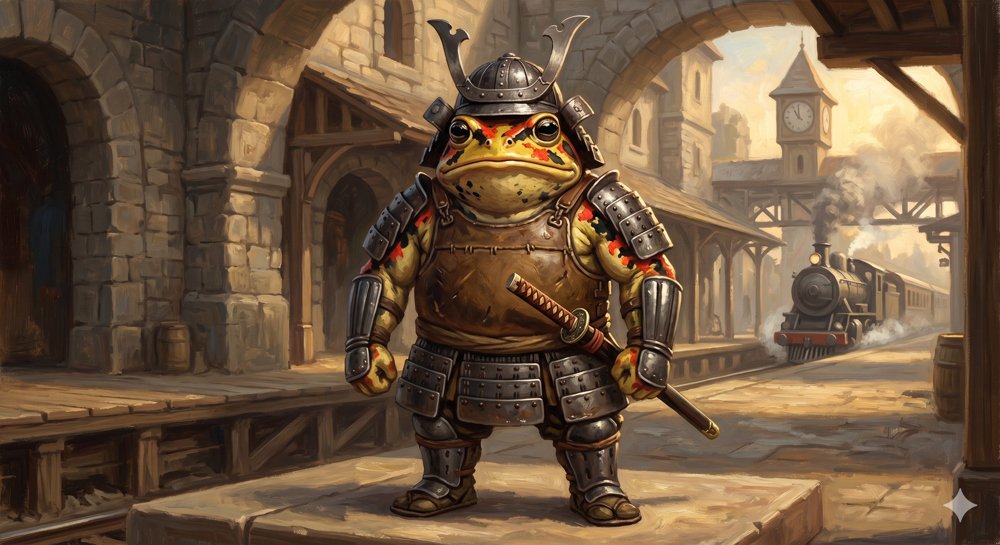

Appears in: Couch Potato Chaos (also appears in Crisis intermission)
Profile

-
Appears in: Couch Potato Chaos (also appears in Crisis intermission)
-
Aliases: Henimaru the Toad
-
Class: Samurai
-
Race: Toad-person
-
Personality: Henimaru is honourable, earnest, and deeply devoted to his children. He speaks in a consistently mangled Shakespearian dialect — “Prithee,” “forsooth,” “thou understandeth” — which the text describes as “his typical butchering of Shakespearian speech.” His code of honour drives every major decision: he will not abandon his tadpoles to slavers, he will not turn his back on allies in peril, and he is scrupulously honest about the terms of his marriage of convenience with Tasha. Despite his imposing appearance and martial prowess, he is disarmingly polite, somewhat naive, and prone to involuntary amphibian reflexes (snagging flies with his tongue, croaking when excited). He has a self-deprecating sense of humour about both his cover stories and the anticlimactic turns his quest sometimes takes. He genuinely appreciates kindness and repays it with loyalty.
-
Backstory: Henimaru was living peacefully with his tadpoles (young toad-people children) in the Slime Federation when Zhakaran slavers attacked while his back was turned during a level-grinding outing. The slavers abducted his children and sold them into Zhakara’s slave markets. Henimaru tracked them across the continent and learned they had been sold at a slave auction in Zhakara. Knowing that toad-people in Zhakara are “considered no more than slaves” and would likely be captured on sight, he devised a plan: marrying a human woman would give him legal cover, since non-humans married to humans are treated as spousal property and generally left alone. He spent weeks asking every human woman he met to marry him — earning a reputation as “a pervy samurai” — until [Impulsive Tasha](./character-tasha-singleton.html), deep in her cups on Dwarven Death Whisky, finally agreed.
-
Significant story events:
- Chapter 33 — The Undocumented Perils of Dwarven Death Whisky (Chaos): Tasha and Pan discover that Tasha drunkenly married Henimaru the previous night. Henimaru explains his backstory and the reason for the marriage of convenience. Tasha agrees to honour the arrangement. When Tasha’s combat log reveals she killed a ninja the night before, Henimaru immediately volunteers to help: “If mine wife be in peril, 't’would be cowardice to turneth a blind eye.”
- Chapter 34 — Rumble on the Belcross Express (Chaos): Henimaru fights alongside Tasha, Ari, Pan, and Slimon through ninja-infested train cars, providing front-line melee damage. He uses his long sticky tongue to swallow [Trista Twinklebottom](./character-trista-twinklebottom.html) whole as she tries to escape, though he coughs her back up moments later — buying enough time for Tasha to trap the fairy in a glass jar. He also helps Pan decouple the passenger cars before Ari suplexes the runaway engine.
- Farewell at Belcross (Chaos, between Ch. 36–37): The morning after the train battle, Henimaru joins the party for breakfast at a Belcross inn before departing south toward Zhakara. He kisses Tasha’s hand and promises to annul the marriage once his children are recovered. Tasha reflects: “He wasn’t such a bad… toad-person.”
- Intermission — Henimaru’s Quest (Crisis): A standalone intermission chapter follows Henimaru’s journey into Ironfall to recover his tadpoles. He bluffs his way past city guards (regurgitating flies as “wares” for the bribe), tracks the slave buyer to a house in the lower city, and prepares for an epic confrontation. Instead, the exhausted human owner begs him to take the children back — they have been utterly impossible to live with, adding “eth” to every third vowel, hopping constantly, and covering everything in slime. Henimaru is mildly disappointed by the anticlimactic resolution but collects his tadpoles and departs. “And that is the tale of how Henimaru was reunited with his lost children.”
-
Notable Quotes:
“I must! Still, I have little hope of setting them free traveling as I am. Then it did occurreth to me that if I were married to a human woman, that might give me the cover I need to maketh mine approach.” — Chapter 33, The Undocumented Perils of Dwarven Death Whisky. Henimaru explains his marriage-of-convenience plan to Tasha and Pan.
“Then I shalt aid thee. If mine wife be in peril, 't’would be cowardice to turneth a blind eye.” — Chapter 33, The Undocumented Perils of Dwarven Death Whisky. Henimaru volunteers to join the fight against the ninjas.
“And now, my wife, I must take my leave. My journey leadeth me to the south, toward the human lands. Though the rescue is yet a daunting task, thanks to thee, I now have hope. If I am successful, I promise to annul our marriage as soon as I returneth with my offspring to more civilized lands.” — Between Chapters 36 and 37. Henimaru bids farewell to Tasha at Belcross.
“'Tis akin to a meaningless subplot in a book that fails to fit into the overarching narrative and eventually peters out, leaving the reader unfulfilled, without any semblance of closure.” — Intermission, Henimaru’s Quest (Crisis). Henimaru complains about the anticlimactic resolution to his quest, breaking the fourth wall.
“Art thou certain thou wouldn’t prefereth a fight to the death?” — Intermission, Henimaru’s Quest (Crisis). Henimaru tries one last time to get an epic battle out of the slave owner.
“Dear lady, I do not believe that thou art capable of having sex with me. Toad-people mate using a process called amplexus. Unless thou art able to lay a large number of eggs on demand, I would not expect relations between us to be possible.” — Chapter 33, The Undocumented Perils of Dwarven Death Whisky. Henimaru reassures Tasha about the terms of their marriage.
-
Relationships:
- [Tasha Singleton](./character-tasha-singleton.html) (wife of convenience): Married while Tasha was drunk on Dwarven Death Whisky. The marriage exists solely to give Henimaru legal cover in Zhakara. Both parties agree to annul it once the children are recovered. Henimaru is unfailingly gallant toward Tasha, addressing her as “my own sweet wife” and kissing her hand at their parting.
- His tadpoles (children): The central motivation of his character. He crossed a continent and entered hostile territory to rescue them from slavery.
- The party (Ari, Pan, Slimon, Kiwi): Fights alongside them during the Belcross Express battle. They part on warm terms.
- Zhakaran slavers: The objects of his quest for vengeance. His children were stolen by Zhakaran slave traders.
-
Physical description: Henimaru is a toad-person — an anthropomorphic amphibian. His skin is a yellowish-green tint dotted with patches of red and black discoloration. He has a large mouth and jaw, perfectly black eyes on either side of his head, and a long sticky tongue capable of snatching insects (and fairies) from mid-air. He involuntarily croaks when excited or emotional. He is stocky and broad, garbed in full iron plate armor: a plate helm that curves upward along either side (like a kabuto), individual sleeve shields, and layers of plate body armor over a thick leather vest. He carries a samurai blade as his primary weapon. When his helmet visor is down, only a portion of his green skin is visible.
-
References: Couch Potato Chaos: Chapter 33 - The Undocumented Perils of Dwarven Death Whisky, Chapter 34 - Rumble on the Belcross Express, Characters | Couch Potato Crisis: Intermission - Henimaru’s Quest